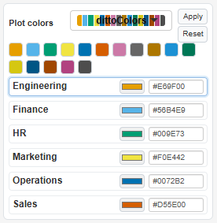
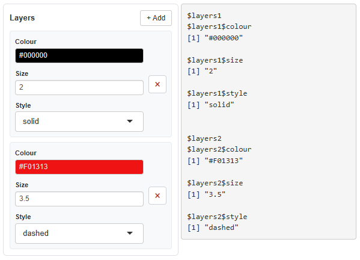

VizModules ships two custom Shiny inputs that go beyond standard
shiny::*Input widgets: multiColorPicker
and multiDynamicInput. multiColorPicker
maps colors to the discrete levels of a variable using palettes or
per-group hex pickers, while multiDynamicInput is a
general-purpose widget that lets users dynamically add and remove rows
of heterogeneous inputs.
multiColorPicker
multiColorPicker assigns a color to each level of a
discrete variable. Users can apply a named palette to every group at
once, or fine-tune individual groups with a native color picker and an
editable hex field. The value reported to input[[inputId]]
is a named character vector of hex colors keyed by group. It is used
throughout the package wherever a plot maps a discrete variable to color
for more granular control than just a palette selection.
Overview
The widget renders a palette selector with Apply and Reset buttons, a preview row of swatches, and one row per group. Selecting a palette and clicking Apply recolors every group in order; the per-group color picker and hex input let users override any single group afterwards.
Basic Usage
library(shiny)
library(VizModules)
ui <- fluidPage(
br(),
splitLayout(
multiColorPicker(
"dept_cols",
label = "Plot colors",
groups = c("Engineering", "Finance", "HR",
"Marketing", "Operations", "Sales"),
selected_palette = "dittoColors"
),
verbatimTextOutput("value")
)
)
server <- function(input, output, session) {
output$value <- renderPrint(input$dept_cols)
}
shinyApp(ui, server)
Key Arguments
| Argument | Description |
|---|---|
inputId |
Shiny input id. The value is accessed via
input[[inputId]]. |
label |
Optional label displayed above the control. |
groups |
Character or factor vector of group names — one color row is created per unique value. |
palette_options |
Named list of palettes (each a character vector of colors). Defaults
to default_palettes(). |
selected_palette |
Name of the palette to preselect. |
colors |
Optional named vector of starting colors, matched to
groups by name. |
show_text |
If TRUE (default), show editable hex text inputs beside
the color pickers. |
compact |
If TRUE, render a tighter layout with smaller
controls. |
panel |
If FALSE, remove the surrounding panel/well
styling. |
Reading the Value
The value in input[[inputId]] is a named character
vector of hex colors keyed by group:
# With groups = c("Engineering", "Finance", "HR", ...)
input$dept_cols
#> c(
#> Engineering = "#E69F00",
#> Finance = "#56B4E9",
#> HR = "#009E73",
#> Marketing = "#F0E442",
#> Operations = "#0072B2",
#> Sales = "#D55E00"
#> )Updating from the Server
Use updateMultiColorPicker() to set specific colors,
apply a palette by name, or reset the widget to its initial state:
# Set specific group colors (only named groups change)
updateMultiColorPicker(session, "dept_cols",
colors = c(Engineering = "#1B9E77", Finance = "#D95F02"))
# Apply a named palette to all groups
updateMultiColorPicker(session, "dept_cols", palette = "ggplot2")
# Reset colors and palette back to the initial state
updateMultiColorPicker(session, "dept_cols", reset = TRUE)Exactly one of colors, palette, or
reset should be supplied per call; reset takes
precedence, followed by palette, then
colors.
Summary
-
multiColorPicker()— place in your UI, one color row per group -
input[[inputId]]— read the named character vector of hex colors in your server -
updateMultiColorPicker()— set colors, apply a palette, or reset from the server
multiDynamicInput
Overview
multiDynamicInput renders a “+ Add” button and a
container. Each time the user clicks Add, a new row appears with
whatever fields you define. An “×” button on each row deletes it. The
collected value is reported to input[[inputId]] as a named
list of rows.
Unlike insertUI/removeUI, rows are managed
entirely client-side via DOM template cloning — no server round-trips
for add/delete.
Basic Usage
library(shiny)
library(VizModules)
ui <- fluidPage(
br(),
splitLayout(
multiDynamicInput(
"layers",
label = "Layers",
row_spec = list(
colour = list(
type = "colour",
args = list(value = "#000000")
),
size = list(
type = "numeric",
args = list(value = 2, min = 0.5, max = 10)
),
style = list(type = "select",
args = list(choices = c("solid", "dashed", "dotted")))
)
),
verbatimTextOutput("value")
)
)
server <- function(input, output, session) {
output$value <- renderPrint(input$layers)
}
shinyApp(ui, server)
Key Arguments
| Argument | Description |
|---|---|
inputId |
Shiny input id. The value is accessed via
input[[inputId]]. |
label |
Label shown next to the + Add button. Also determines row naming (lowercased). |
row_spec |
Named list defining one row’s fields. Each entry has
type (or fn) and args. |
elements |
Optional list of pre-filled rows to show on startup. |
max_per_row |
Number of fields per visual line before wrapping (default 4). |
panel |
If FALSE, removes the border/background styling. |
Defining Fields with row_spec
Each field in row_spec is a named list with:
-
type— a shorthand alias:"select","text","numeric","slider","checkbox","colour"/"color". -
fn— alternatively, any input constructor function (e.g.shiny::dateInput). Use this for inputs without a built-in alias. -
args— a list of arguments passed to the constructor (everything exceptinputId, which is auto-generated per row).
# Using type aliases
row_spec = list(
name = list(type = "text", args = list(placeholder = "Enter name")),
age = list(type = "numeric", args = list(value = 25, min = 0, max = 120))
)
# Using fn for a custom input
row_spec = list(
date = list(fn = shiny::dateInput, args = list(label = "Date", value = Sys.Date()))
)Pre-filled Rows with elements
To show rows on startup with specific values:
multiDynamicInput(
"models",
label = "Models",
row_spec = list(
model_type = list(type = "select", args = list(choices = c("lm", "glm"))),
formula = list(type = "text", args = list(placeholder = "y ~ x"))
),
elements = list(
models1 = list(model_type = "lm", formula = "revenue ~ units"),
models2 = list(model_type = "glm", formula = "revenue ~ poly(units, 2)")
)
)The names (models1, models2) don’t matter
for input — they’re auto-generated from the label at runtime. The values
inside each element must match the row_spec field
names.
Reading the Value
The value in input[[inputId]] is a named list of
rows:
# With label = "Models" and two rows filled in:
input$models
#> list(
#> models1 = list(model_type = "lm", formula = "revenue ~ units"),
#> models2 = list(model_type = "glm", formula = "revenue ~ poly(units, 2)")
#> )Row names are derived from the label argument
(lowercased) plus an index: models1, models2,
etc.
Updating from the Server
Use updateMultiDynamicInput() to replace all rows or
clear them:
# Replace all rows
updateMultiDynamicInput(session, "models", elements = list(
models1 = list(model_type = "lm", formula = "y ~ x")
))
# Clear all rows
updateMultiDynamicInput(session, "models", clear = TRUE)Backend-Specific Fields
When used with the model backend system (see
vignette("custom-model-lines")), fields can be tagged with
a backend attribute. These fields are hidden by default and
only appear when the matching model type is selected:
row_spec = list(
model_type = list(type = "select", args = list(choices = c("lm", "drm"))),
formula = list(type = "text", args = list(placeholder = "y ~ x")),
# Only visible when model_type == "drm"
drc_fct = list(type = "select", backend = "drm",
args = list(choices = c("LL.4", "LL.3")))
)In practice you don’t build this manually —
build_model_row_spec() does it for you by collecting
fields from all registered backends.
Summary
-
multiDynamicInput()— place in your UI -
input[[inputId]]— read the named list of rows in your server -
updateMultiDynamicInput()— set or clear rows from the server -
build_model_row_spec()— auto-build a row_spec from registered model backends